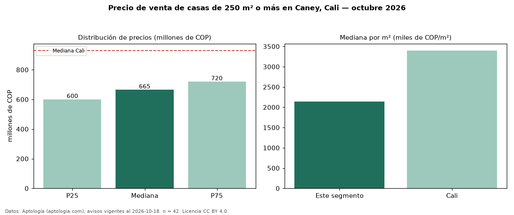

Precio de venta de casas de 250 m² o más en Caney, Cali — octubre 2026
COP 665 millones es el precio mediano de casas de 250 m² o más en venta en Caney, Cali (n = 42 avisos). Frente a la mediana de todas las casas en venta de Caney (COP 595 millones, n = 108), queda 12 % por encima; este segmento reúne el 39 % de esos avisos. Por metro cuadrado, la mediana es COP 2,14 millones/m² (n = 42), 21 % por debajo del conjunto de referencia (COP 2,71 millones/m²). El área mediana anunciada es 315 m². El segmento con más oferta es el de 3 o más habitaciones (42 avisos, mediana COP 665 millones). El estrato más frecuente es 4 (71 % de los avisos con estrato). La mediana de todas las casas en venta de Cali es COP 930 millones (−28 % de diferencia). La mitad central de los avisos va de COP 600 millones a COP 720 millones (razón 1,2), una dispersión baja. Datos: Aptología (aptologia.com), CC BY 4.0 — https://www.aptologia.com/casas-en-venta/cali/caney. Archivos: PDF, CSV con las cifras y gráfica PNG.

| Avisos únicos | 42 |
|---|---|
| Percentil 25 | COP 600.000.000 |
| Mediana | COP 665.000.000 |
| Percentil 75 | COP 720.000.000 |
| Mediana por m² | COP 2.136.517 |
Fuente: avisos vigentes de portales inmobiliarios recopilados por Aptología, deduplicados (mínimo 30 avisos únicos por celda). Precios pedidos, no cerrados. Fecha: 2026-10-18.